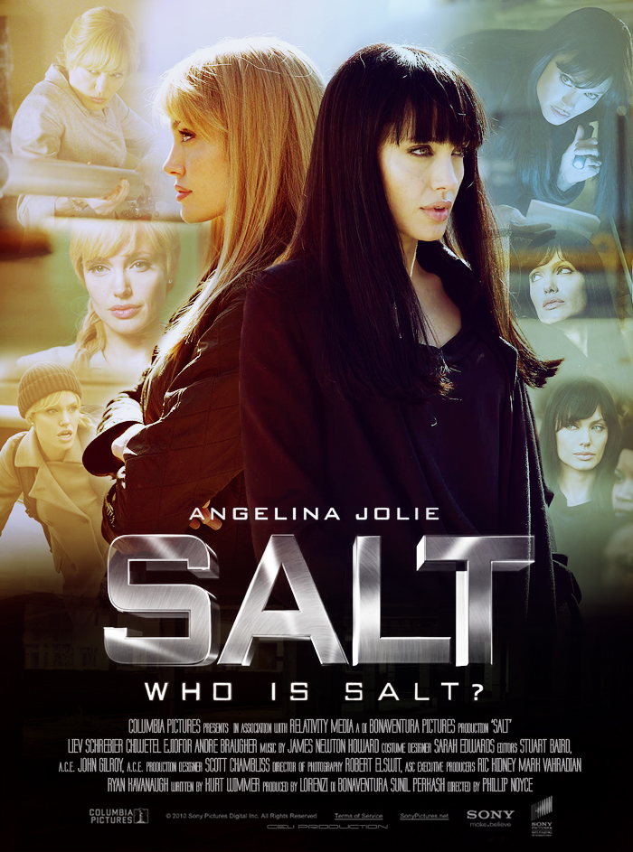
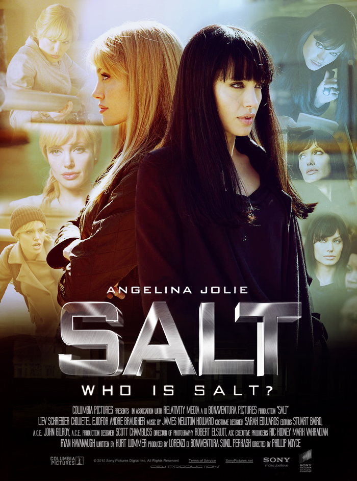

Ratings
In 1992 Bogota, a little girl (Amandla Stenberg) watches crime lord Don Luis (Beto Benites) and his henchman Marco (Jordi Mollà) murder her parents. Fifteen years later, the now-grown Cataleya (Zoe Saldana), who is named for a Colombian orchid, works as a contract killer for her Chicago-based uncle (Cliff Curtis). Leaving a lipstick drawing of her namesake on every victim, Cataleya carries out her assignments with cold, frightening efficiency and dreams of avenging her family.

Ratings
The story of a man (Matt Damon), salvaged, near death, from the ocean by an Italian fishing boat. When he recuperates, the man suffers from total amnesia, without identity or background... except for a range of extraordinary talents in fighting, linguistic skills and self-defense that speak of a dangerous past. He sets out on a desperate search-assisted by the initially rebellious Marie (Franka Potente) - to discover who he really is, and why he's being lethally pursued by assassins.
Ratings
When Evelyn Salt (Angelina Jolie) became a CIA officer, she swore an oath to duty, honor and country. But, when a defector accuses her of being a Russian spy, Salt's oath is put to the test. Now a fugitive, Salt must use every skill gained from years of training and experience to evade capture, but the more she tries to prove her innocence, the more guilty she seems.